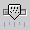
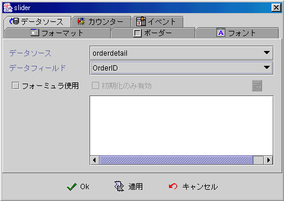
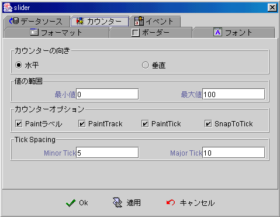
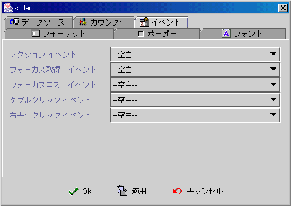

|

スライダーコンポーネント (Slider component)

共通プロパティ (common properties)
データソース (data source)
スライダープロパティ (Slider properties)
イベント (event)
フォーミュラget/setプロパティ
(formula get/set properties)
データソース (data source)
-
データソース
(data source)：データソースの選択。
-
データフィールド
(data field)：データフィールドの選択。
-
フォーミュラを使う (use formula)：フォーミュラ
(formula) を使ってプロセス結果を表示します。データソースは移動、保存、削除或いは他のコンポーネント値が変更 (changed)
された時，フォーミュラ
(formula) は同時に計算・更新します。
-
初期化の時に限って使用可能 (initial only)：フォームオープンする時，フォーミュラ
(formula) はプロセスされた結果をフォーム表示し，その後，再び自動にプロセス
(compute and refresh)更新を掛けません。デザインナーは【コンポーネント値設定】
(set component data event)イベントを使って SetProp()
のフォーミュラで更新します。

▲Top
スライダープロパティ (Slider properties)

▲Top
イベント (event)
-
アクションイベント
(action event)：ユーザはクリックかタッチする時，起動するイベント (fire event)。
-
Gain
Focus イベント：Focus
はスライダーに入る時，起動するイベント 。
-
Lost
Focus イベント： Focus はスライダーから離れる時，起動するイベント 。
-
ダブルクリックイベント
(double clicked event)：左ダブルクリックすると，起動するイベント。
-
右クリックイベント
(right clicked event)：右クリックすると，起動するイベント。

▲Top
フォーミュラget/setプロパティ
(formula get/set properties)
SetProp("コンポーネント名",
"プロパティ", 值) ：プロパティ設定。
SetProp("コンポーネント名",
"プロパティ", 值1, 值2)：プロパティ設定。
GetProp("コンポーネント名",
"プロパティ")：プロパティ読み取り。
| Set
Properties |
| プロパティ
(Properties) |
値１
(Value 1) |
値2
(Value 2) |
説明(Descriptions) |
| enabled |
1 使用可能，0 無効 |
|
使用可能と無効。 |
| setfocus |
1 Focus設定 |
|
設定 Focus。 |
| visible |
1 表示，0 隠し |
|
表示と隠し。 |
| repaint |
1 再描く，2 即再度描く |
|
再描く。 |
| revalidate |
1 フォーミュラ再度計算 |
|
フォーミュラ再度計算。 |
| value |
N 値 |
|
スライダーデフォルト値をNに設定。 |
| Get
Properties |
| プロパティ
(Properties) |
リターン値
(Return value) |
説明 (Descriptions) |
| isenabled |
1 使用可能，0 無効 |
使用可能と無効。 |
| isvisible |
1 表示，0 隠し |
表示と隠し。 |
| value |
N 値 |
スライダーデフォルト値読み取り。 |
▲Top
Copyright © 2001~
2004 Probe Technology . All Rights Reserved.
Questions, comments,
and suggestions to Service@probe.com.tw
|